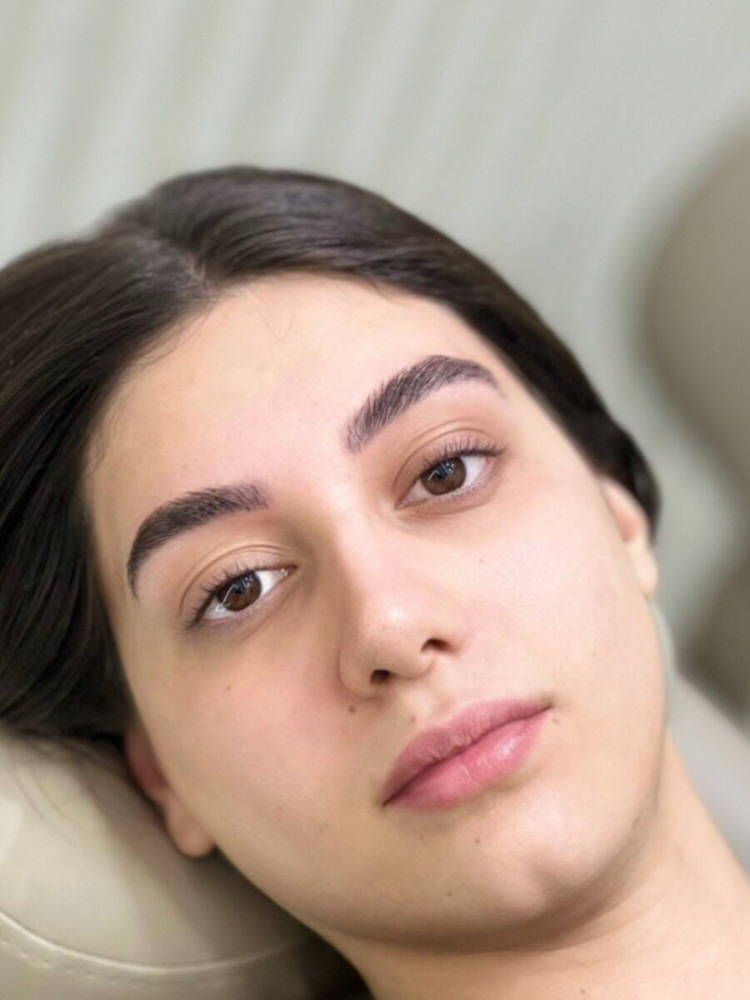
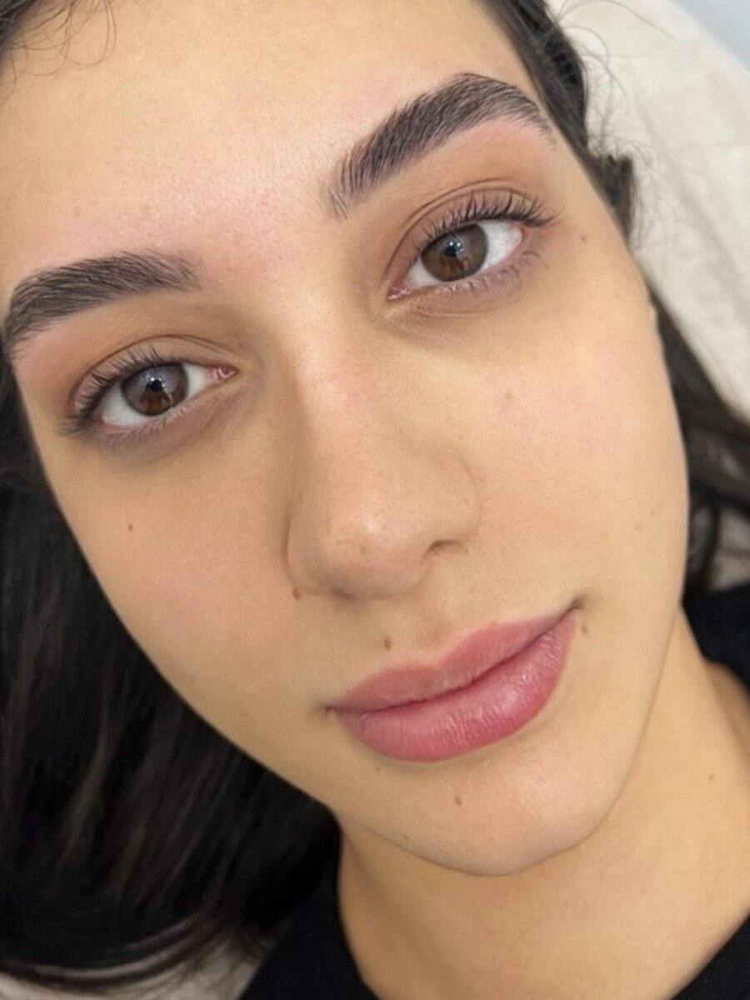
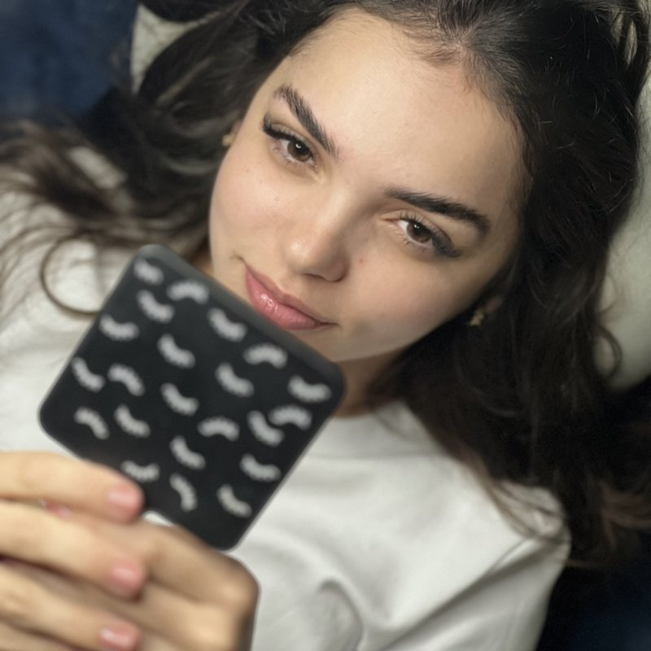
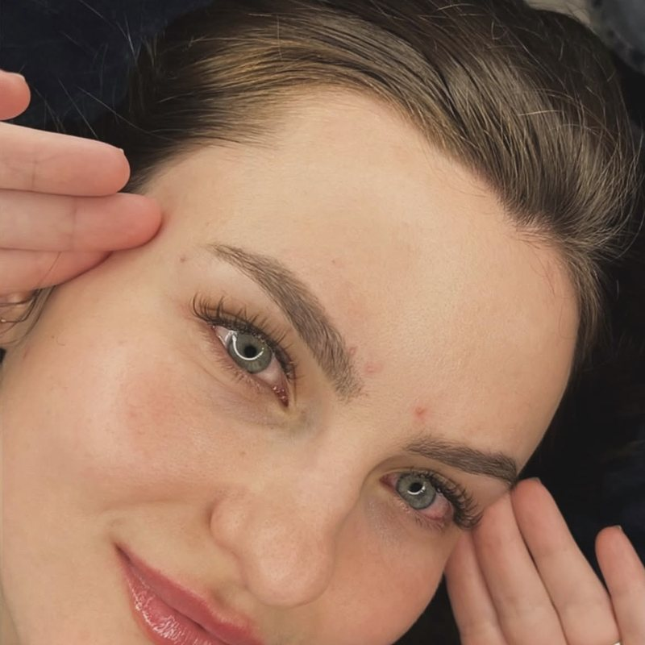
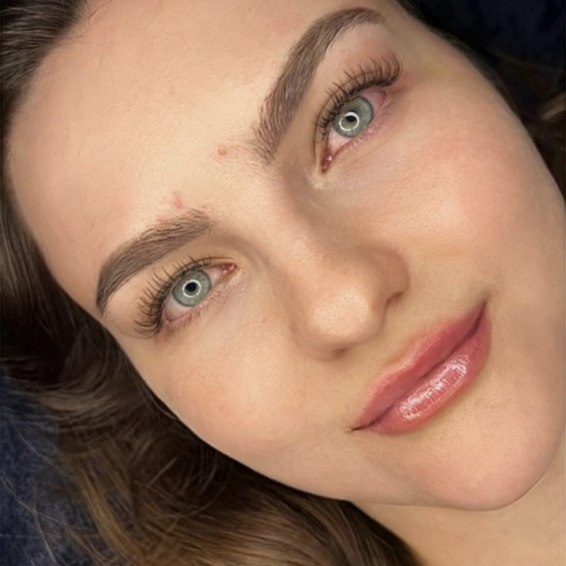

Aeroportos · Tatuapé · Moema · Hotel
Sobrancelhas premium para quem vem de fora de São Paulo
Chegou por Guarulhos ou Congonhas? Design de sobrancelhas, cílios e lash lifting com hora marcada, todos os dias das 9h às 21h, no Tatuapé, em Moema ou no seu hotel.
Agendar pelo WhatsApp★★★★★ 5,0 no Google · Atendimento exclusivo para mulheres
O Bella Beauty Club é um estúdio premium de sobrancelhas e cílios em São Paulo com duas unidades: Tatuapé (zona leste, Rua Bom Sucesso, 220, Edifício Platina, a 5 minutos do Metrô Tatuapé) e Moema (zona sul, Av. Rouxinol, 1041, região próxima ao Aeroporto de Congonhas). Atende quem vem de fora e de passagem pelos aeroportos de Guarulhos e Congonhas, todos os dias das 9h às 21h, inclusive domingos mediante agendamento, e oferece Atendimento VIP em hotel exclusivo para mulheres. Nota 5,0 no Google. Agendamento pelo WhatsApp (11) 95241-2499.
Escolha o melhor caminho para a sua viagem
Vindo de Guarulhos (GRU)
Unidade Tatuapé, zona leste, com acesso por aplicativo ou táxi. Informe o horário do voo no WhatsApp e organizamos o melhor encaixe.
Vindo de Congonhas (CGH)
Unidade Moema, zona sul, em região próxima ao aeroporto. Ideal para quem fica entre Moema, Ibirapuera, Itaim e Vila Olímpia.
No seu hotel
Atendimento VIP exclusivo para mulheres, em hotel ou domicílio, inclusive domingos, com segurança e discrição.
Ver unidade Moema → · Hospedada no Tatuapé → · Atendimento VIP →
O que você pode fazer de passagem
Design de sobrancelhas
Visagismo para harmonizar com o seu rosto, com avaliação gratuita pelo WhatsApp.
Brow lamination
Fios alinhados e penteados para cima: sobrancelha cheia e natural.
Lash lifting e cílios marrom
Olhar aberto e natural, sem precisar de rímel no dia a dia da viagem. Veja o efeito natural logo abaixo.
Extensão de cílios
Fio a fio, volume brasileiro, egípcio, americano, glam, efeito molhado e híbrido.





DESLIZE PARA VER MAIS →
Cílios com efeito natural para o seu dia a dia de viagem
Olhar marcante sem exagero: técnicas leves, que combinam com quem passa o dia em reuniões, passeios e eventos.
Fio a fio
Um fio sobre cada cílio natural: o efeito mais clássico, discreto e elegante.
Efeito molhado (Jade Picon)
Aspecto de rímel recém-passado, leve e despojado, sem pesar no olhar.
Lash lifting
Curvatura e alongamento dos seus próprios cílios, sem extensão e sem precisar de rímel.
Cílios marrom
Tom mais suave e natural, ideal para quem quer sofisticação discreta.
Volume brasileiro
Mais preenchimento, ainda com acabamento natural e delicado.
Híbrido
Mistura de fio a fio com volume, para um olhar equilibrado.
Experiência de quem treinou profissionais
A fundadora do Bella Beauty Club trabalhou com a Natalia Beauty, referência em sobrancelhas e olhar no Brasil, onde era master e treinava as profissionais da marca.
Essa bagagem se traduz em avaliação criteriosa do seu rosto, técnica refinada e resultado natural, mesmo para quem está de passagem e tem pouco tempo.
Como agendar estando de passagem
Chame no WhatsApp
Informe a data, o horário de chegada ou do voo e o hotel ou bairro onde estará.
Escolha unidade e horário
Tatuapé, Moema ou Atendimento VIP no hotel, todos os dias das 9h às 21h.
Avaliação de design
Gratuita pelo WhatsApp, para definir a técnica ideal ao seu rosto.
Chegue e saia pronta
Hora marcada para você seguir a sua agenda de viagem sem atrasos.
Perguntas frequentes
Tem sobrancelha premium perto do aeroporto de Guarulhos?
O Bella Beauty Club fica no Tatuapé, zona leste de São Paulo, com acesso por aplicativo de transporte ou táxi a partir do Aeroporto de Guarulhos (GRU). Agende pelo WhatsApp (11) 95241-2499 informando o horário do seu voo para organizarmos o melhor encaixe.
E se eu chegar por Congonhas?
Temos também a unidade Moema (Av. Rouxinol, 1041, Conj. 407-A), na zona sul, região próxima ao Aeroporto de Congonhas (CGH). Escolha a unidade mais conveniente para o seu trajeto.
Posso fazer sobrancelha no mesmo dia em que chego em São Paulo?
Sim, mediante agendamento. Atendemos todos os dias, das 9h às 21h, inclusive domingos. Chame no WhatsApp com a data, o horário de chegada e o hotel para encontrarmos o melhor horário.
Quanto tempo leva o design de sobrancelhas?
Depende da técnica escolhida. Na avaliação, que é gratuita pelo WhatsApp, indicamos o procedimento ideal e o tempo estimado para você encaixar na sua agenda de viagem.
Vocês atendem no hotel?
Sim. Temos o Atendimento VIP exclusivo para mulheres, em domicílio ou no hotel, inclusive aos domingos, com segurança e discrição. Consulte disponibilidade e região pelo WhatsApp.
Vocês fazem cílios com efeito natural?
Sim. Para um resultado natural indicamos fio a fio, efeito molhado (estilo Jade Picon), lash lifting, cílios marrom, volume brasileiro leve ou híbrido. Na avaliação gratuita pelo WhatsApp definimos a técnica ideal ao seu olhar.
Quais serviços posso fazer de uma vez só?
Design de sobrancelhas, brow lamination, lash lifting, extensão de cílios (fio a fio, volume brasileiro, egípcio, americano, glam, efeito molhado e híbrido) e cílios marrom. O combo de sobrancelhas e cílios é muito procurado por quem está de passagem.
Como chego ao Bella Beauty Club no Tatuapé?
Rua Bom Sucesso, 220, Conj. 17, Edifício Platina, a 5 minutos do Metrô Tatuapé (Linha 3-Vermelha). De aplicativo, informe o endereço ou o Edifício Platina.
Quem é a profissional que atende no Bella Beauty Club?
A fundadora do Bella Beauty Club trabalhou com a Natalia Beauty, referência em sobrancelhas e olhar no Brasil, onde era master e treinava as profissionais da marca.
Atendem em inglês ou para turistas estrangeiras?
O atendimento é em português pelo WhatsApp. Turistas são bem-vindas: o atendimento é feito com tranquilidade, e a equipe orienta o procedimento e os cuidados após o serviço.
Sobrancelha impecável sem perder o voo
Avaliação gratuita pelo WhatsApp. Tatuapé, Moema ou no seu hotel.